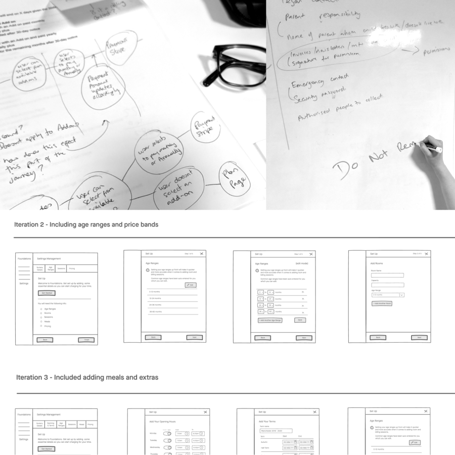
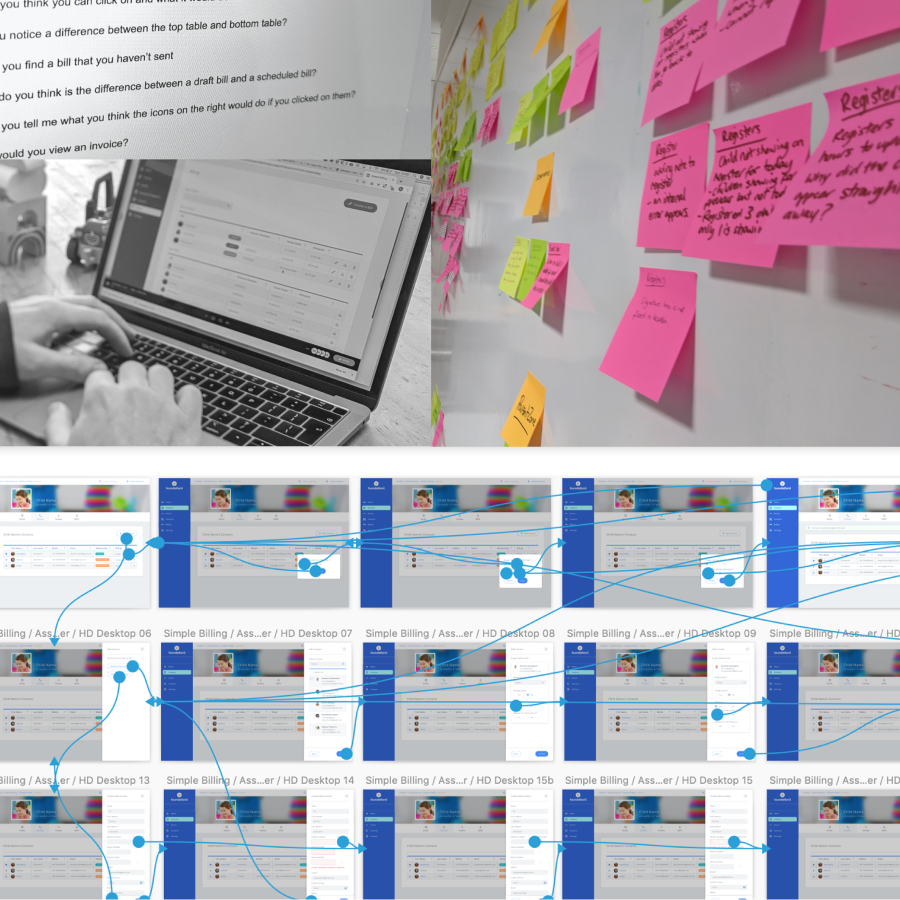
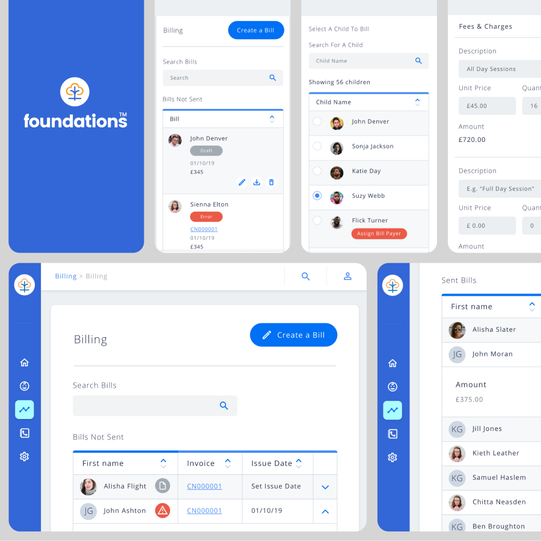

Connect Childcare
Making complex childcare billing clearer, calmer and easier to manage.
Background
Connect Childcare's billing software had become complex, inaccurate and difficult to use, resulting in high support demand and some customers reverting to paper processes.
The challenge was to redesign the experience for childminders, nurseries and after-school clubs while delivering a single product within a tight deadline.

What I did
- Led end-to-end UX, conducting customer interviews and synthesising research through empathy mapping, experience mapping and problem framing.
- Facilitated collaborative discovery, opportunity and prioritisation workshops to define an MVP.
- Sketched concepts and built rapid prototypes, validating ideas through moderated usability testing.
- Designed a scalable billing experience balancing different customer types while simplifying technical complexity.
- Worked closely with product and engineering throughout delivery, translating research into clear design decisions.

Result
- Delivered a simpler billing experience that users described as “something I'd use right away.”
- Created a single solution supporting multiple customer types while reducing technical complexity.
- Helped customers move from paper-based billing to a digital workflow tailored to their needs.
- Reduced administrative effort for childcare providers and significantly lowered support requests.
